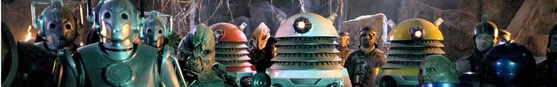

| Home | The Doctors | The Companions | The Villains |
|  | |||
The VillainsWhen Sydney Newman commissioned the series, he specifically did not want to perpetuate the cliché of the "bug-eyed monster" of science fiction.[97] However, monsters were popular with audiences and so became a staple of Doctor Who almost from the beginning. With the show's 2005 revival, executive producer Russell T Davies stated[98] his intention to reintroduce classic icons of Doctor Who one step at a time: the Autons with the Nestene Consciousness and Daleks in series 1, Cybermen in series 2, the Macra and the Master in series 3, the Sontarans and Davros in series 4, and the Time Lords (Rassilon) in the 2009–10 Specials. Davies' successor, Steven Moffat, has continued the trend by reviving the Silurians in series 5, Cybermats in series 6, the Great Intelligence and the Ice Warriors in Series 7, and Zygons in the 50th Anniversary Special.[99] Since its 2005 return, the series has also introduced new recurring aliens: Slitheen (Raxacoricofallapatorian), Ood, Judoon, Weeping Angels and the Silence. Besides infrequent appearances by the Ice Warriors, Ogrons, the Rani, and Black Guardian, three adversaries have become particularly iconic: the Daleks, the Cybermen, and the Master. |